Российский университет дружбы народов им. П. Лумумбы
Цель работы
Познакомиться с операционной системой Linux. Получить практические
навыки работы с редактором Emacs.
Задание
Ознакомиться с теоретическим материалом.
Ознакомиться с редактором emacs.
Выполнить упражнения.
Ответить на контрольные вопросы.
Выполнение лабораторной
работы
Открываю emacs.
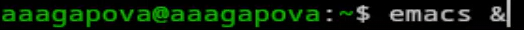
Открытие emacs
Создаю файл lab07.sh с помощью комбинации C-x C-f.
Создание файла
Набираю текст и сохраняю файл с помощью комбинации C-x C-s.
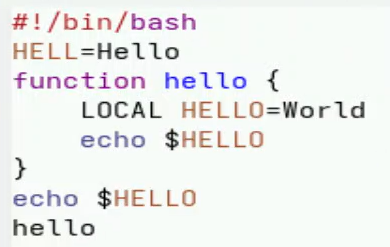
Сохранение файла
Вырезаю одной командой целую строку С-k.
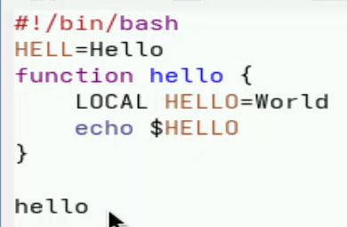
Работа с файлом
Вставляю эту строку в конец файла C-y.
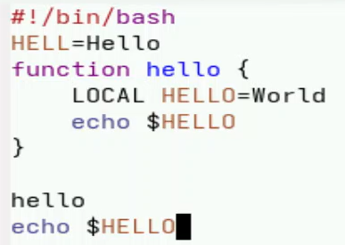
Работа с файлом
Выделяю область текста C-space. Копирую область в буфер обмена
M-w.
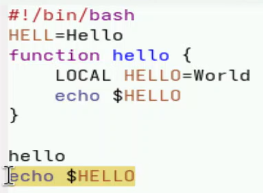
Работа с файлом
Вставляю область в конец файла.
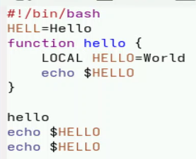
Работа с файлом
Вновь выделяю эту область и на этот раз вырезаю её C-w.
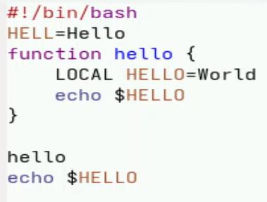
Работа с файлом
Отменяю последнее действие C-/.
Работа с файлом
Перемещаю курсор в начало строки C-a.
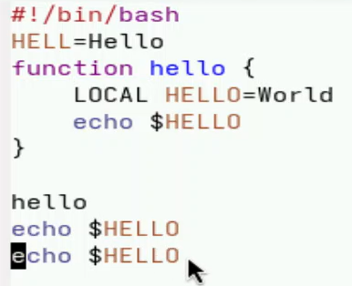
Работа с файлом
Перемещаю курсор в конец строки C-e.
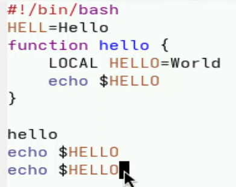
Работа с файлом
Перемещаю курсор в начало буфера M-<.
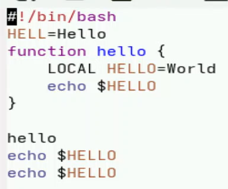
Работа с файлом
Перемещаю курсор в конец буфера M->.
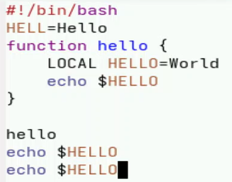
Работа с файлом
Вывожу список активных буферов на экран C-x C-b.
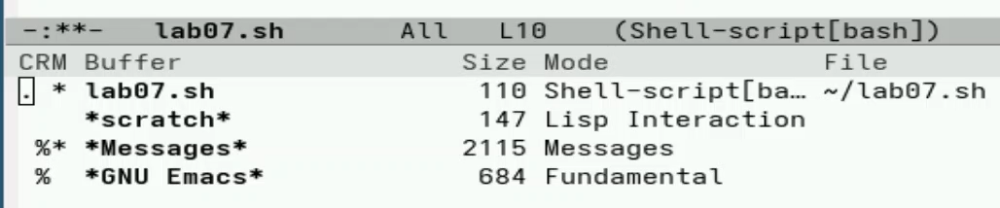
Вывод списка
Перемещаюсь во вновь открытое окно C-x o со списком открытых буферов
и переключаюсь на другой буфер. Закрываю это окно C-x 0.
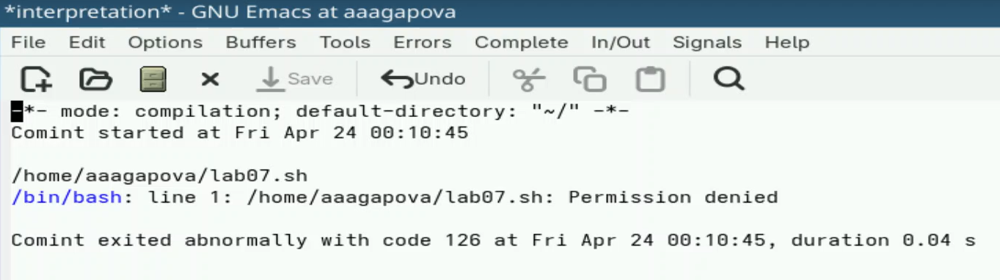
Работа с буфером
Делю фрейм на 4 части: разделяю фрейм на два окна по вертикали C-x
3, а затем каждое из этих окон на две части по горизонтали C-x 2.
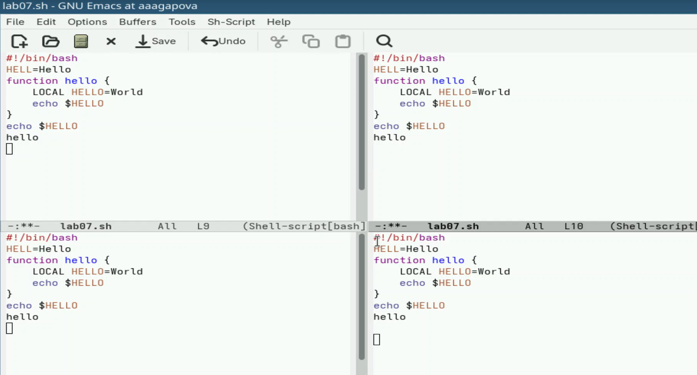
Деление окна
В каждом из четырёх созданных окон открываю буфер.
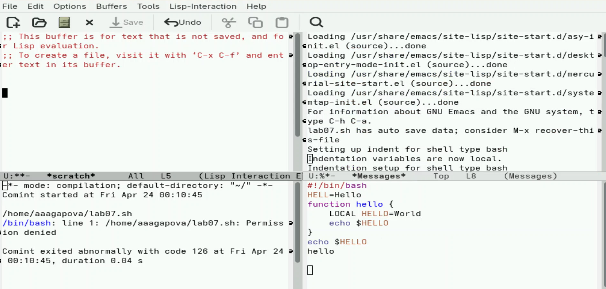
Открытие буфера
Переключаюсь в режим поиска C-s и нахожу несколько слов,
присутствующих в тексте.
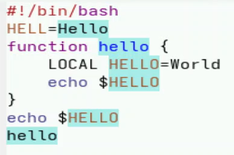
Поиск слов
Переключаюсь между результатами поиска, нажимая C-s. Выхожу из
режима поиска, нажав C-g.
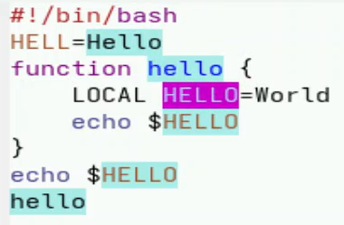
Результаты поиска
Перехожу в режим поиска и замены M-%, ввожу текст, который следует
найти и заменить, нажимаю Enter , затем ввожу текст для замены. После
того как будут подсвечены результаты поиска, нажимаю ! для подтверждения
замены.
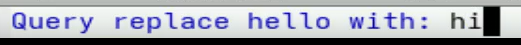
Замена текста
Пробую другой режим поиска, нажав M-s o. Выводит результат в
отдельном окне от буфера.
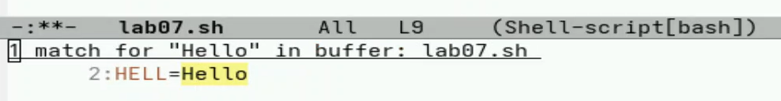
Режим поиска
Выводы
Я познакомилась с операционной системой Linux, получила прктические
навыки работы с редактором Emacs.